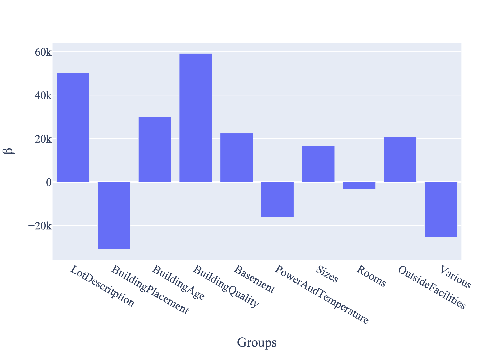

We present here an analysis of a solution found by a Partitioned LS algorithm on the Ames House Prices dataset, which is publicly available via Kaggle.
The Julia notebook used to generate the results is available here.
This dataset has a relatively high number of columns (79 in total) each detailing one particular characteristic of housing properties in Ames, Iowa. The task is to predict the selling price of each house.
We propose a grouping of the features into 10 groups, each one representing a high-level characteristic of the property:
| Group | Features |
|---|---|
| LotDescritption | MSSubClass, MSZoning, LotFrontage, LotArea, Street, Alley, LotShape, LandContour, LotConfig, LandSlope |
| BuildingPlacement | Utilities, Neighborhood, Condition1, Condition2 |
| BuildingAge | YearBuilt, YearRemodAdd |
| BuildingQuality | BldgType, HouseStyle, OverallQual, OverallCond, RoofStyle, RoofMatl, Exterior1st, Exterior2nd, MasVnrType, MasVnrArea, ExterQual, ExterCond, Foundation, Functional |
| Basement | BsmtQual, BsmtCond, BsmtExposure, BsmtFinType1, BsmtFinSF1, BsmtFinType2, BsmtFinSF2, BsmtUnfSF, TotalBsmtSF |
| PowerAndTemperature | Heating, HeatingQC, CentralAir, Electrical, Fireplaces, FireplaceQu |
| Sizes | 1stFlrSF, 2ndFlrSF, LowQualFinSF, GrLivArea |
| Rooms | BsmtFullBath, BsmtHalfBath, FullBath, HalfBath, BedroomAbvGr, KitchenAbvGr, KitchenQual, TotRmsAbvGrd |
| OutsideFacilities | GarageType, GarageYrBlt, GarageFinish, GarageCars, GarageArea, GarageQual, GarageCond, PavedDrive, WoodDeckSF, OpenPorchSF, EnclosedPorch, 3SsnPorch, ScreenPorch, PoolArea, PoolQC, Fence |
| Various | MiscFeature, MiscVal, MoSold, YrSold, SaleType, SaleCondition |
As an example, we collect 6 columns referring to the availability and quality of air conditioning systems, electrical system, heating and fireplaces in a "Power and Temperature" group. Other feature groups refer to overall quality of the construction work and materials employed ("Building Quality"), external facilities such as garages or swimming pools ("Outside Facilities"). The $\beta$ values for the groups are as follows:

We note that the grouped solution enabled by the partitioned least squares formulation is able to give a high-level summary of the regression result. An analyst is therefore able to communicate easily to, e.g. an individual selling their house, that the price is mostly determined by the building quality and the attractiveness of the lot. A deeper analysis is of course possible by investigating the $\alpha$ values found by the algorithm. For instance, let consider the contributions to the ``Outside Facilities'':

Here, one is able to notice that garage quality has the biggest impact on the property's price, which is potentially actionable knowledge.
We argue that the group- and feature-level analysis made possible by our contributions improves on the interpretability of ungrouped linear regression.